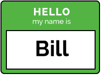
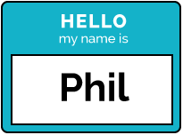
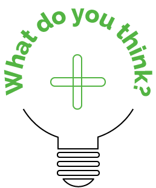

Prescribing with Bill and Phil
Let's take a look at a multichannel marketing (MCM) approach from a biopharmaceutical perspective.


Bill and Phil are identical twins and both are active Multiple Sclerosis (MS) specialists. They may look similar, but they differ in a number of ways, especially in their learning styles.
Bill is your classic introvert and prefers to research new treatment options through careful reading of journals and online articles.
Phil is more extroverted and enjoys having a dialogue with his Area Business Manager (ABM) and colleagues when considering a new drug. He's open to new treatment options, but prefers to let others around him be the early adopters.
During Bill's meeting, the ABM addresses how Generax should be the drug treatment of choice based on the latest research studies the ABM emailed to Bill prior to the meeting. After the Generax presentation, the ABM finishes with a Q&A session to address any questions Bill might have about the drug treatment and leaves him with brochure reprint of the study.
With Phil, the ABM brings an interactive visual aid (iVA) that Phil can interact with during their meeting. Once Phil has finished exploring Generax through the iVA, they chat about how Generax performed in a recent clinical research study. The ABM then invites Phil to participate in an upcoming symposium where the results of the study will be discussed.
Our ABM will approach marketing a new MS drug treatment, Generax, to Bill and Phil differently.
Yes, I feel confident prescribing Generax to my patients.
Yes, I'm ready to prescribe Generax!
Based on these different experiences, both Bill and Phil are interested in trying Generax with some of their patients.
Empowered customers
The advent of digital technology has significantly changed consumer behavior in the past 10 to 15 years. Multiple channels and ease of access to information and services empower consumers like never before. As a result, customers can decide what, when, and how they want to engage with "brands." Marketers are exploring many new ways to combine multiple channels to engage customers on their terms.
Multichannel
Marketing
Pharma:
Then and now
How does the explosion of digital marketing technology impact the pharmaceutical
marketing approach?
At Biogen, our marketing focus is to maintain strong relationships with Health Care Professionals (HCPs), physicians, patients, and Payers by leveraging multiple digital channels.
As always, our goal is to improve patient outcomes by delivering information and services that best support our customers—this requires a coordinated multichannel approach.
So how does this apply to you?
In order to achieve our goal of maintaining strong relationships with our customers, it's best to start by assessing the current marketing landscape, pinpointing tactics that work well, and identifying new programs that improve the customer experience. As you start to understand how customers respond to new MCM approaches, you can adjust and enhance the channels to fit the customer's needs.
As your customer understanding grows, you'll be able to tailor your programs and gain improved insights into the customer's needs. Through repeated tests and insights, you can create more impactful and engaging programs. The key is to find the information and services that you can address fully and your brand can naturally support.
Throughout this course, we'll provide you with the foundational tools you'll need to get started.
Insights
Audience segmentation
A one-size-fits-all marketing strategy won't be very successful in a world where more companies are personalizing every customer interaction.
Ease of access to information and services through the availability of multiple channels drive the consumer marketplace, so it's paramount to identify segments based on user behavior and/or channel preferences for Biogen’s target audiences.

Consider the factors that make up the physician segment. How might they respond differently to new drug treatments? The way an early adopter receives information will differ from a conservative physician.
A blended approach, utilizing face-to-face and non-personal communications, will leverage market segment information to provide more relevant services. Testing to see what works and measuring responsiveness will be essential to the success of your MCM effort.
One way to test responsiveness is to look across the different channels to ensure there is a mechanism to measure success. That measurement needs to reflect the overall strategic objective of the program. Some examples of the types of measurement are:
- Number of physicians participating in a webcast
- Adherence to a treatment schedule
- Number of nurses who responded to an email invitation
I’m very analytical. I really enjoy researching studies, reviews, and clinical data. Once I have a good handle on what the new drug is all about, I like to talk with my peers and then my ABM. If it meets my expectations, then I will give it a try in my practice.
I like to ask a lot of questions. I’ll pick my ABM’s brain and ask other physicians to get the information I need. If I feel like something’s not right, I’ll go online and see what everyone else is saying about it.
CC
CC
Do you know the customer?
Review the physician profiles for Bill and Phil, and determine which multichannel approach best suits their interaction style.
Select the button to begin.
Excellent choice.
Phil's profile is a match for option 2, especially as it pertains to engaging with the ABM and other physicians, whereas Bill would prefer option 1 since he enjoys researching
clinical data.
Incorrect.
That might possibly work. Since Phil enjoys engaging with other physicians he might be a better match for option 2. Bill might enjoy option 1 more because of his analytical personality.
Based on the physician's profile, select the MCM approach that best fits the customer.
Option 1
Send emails for a medical resource site with links to clinical review studies. Send invitations to participate in self-directed learning activities.
Option 2
Send invitations to participate in dinner meetings with local key opinion leaders. Prep ABMs with drug treatment conversation scripts and iVAs that highlight clinical study results.

To what point do we 'really' know our customers?
What can you do to learn more about how customers are responding to certain channels that uncover deeper motivational insights?
Get the content right
Besides channel, content can also provide different approaches for engaging customers. More importantly, you should concentrate on creating content that is relevant to addressing the customer need that your program is focused on.
Content, in the context of MCM, involves delivering messages through multiple channels that will ultimately lead to improved customer relationships.
Let's look at an example of a program focused on attracting physicians to visit a new drug treatment website. Here are some questions to consider when developing your program:
- What on this website will educate a physician to learn more and ultimately prescribe the drug? What call to action is most appropriate as the physician is considering this new drug option?
- How are you going to get physicians to visit this website? Now, how are you going to drive the 'right' physicians to your site?
- Which blend of channels (traditional and digital) will earn the highest return?
- What are the most relevant search terms (words and/or phrases) that need to be used for Search Engine Optimization (SEO)?
- Will a social media program be effective? How about a mobile app?
After you've addressed those questions, your next task is to measure the relevancy of your content. What is the desired action from the content, and how does that tie back to the marketing goal? For example, the desired action may be in the form of website registration, a download of a PDF with prescribing information, a social media action (post, share, etc.), or a video view.
Service and content
We know that content must address the needs of our customer, but when we address content, we must also talk about service.
Although creating content is important to the overall marketing strategy, service ensures we are fulfilling our promises to the customer whether that's digitally or personally. Creating and delivering content with service in mind is the hallmark of a successful Biogen MCM program.
To understand how content and service work together, let's look at a typical strategy with HCPs. An ABM is equipped with a presentation aid to discuss a new treatment intervention, but if the HCP is requesting additional medical information, then the ABM can serve the HCP by connecting them with a Medical Service Liaison (MSL). If the HCP is browsing a website, that same service may be provided by offering a phone number or a link to chat with an MSL.
I was pleasantly surprised to see my ABM come with something that actually interests me. Typically, he will just talk about how your company’s latest drug treatment is the next best thing, but this time he gave me something tangible. He’s really in tune with what appeals to me, and I appreciate that.
Bill is your classic introvert and prefers to research new treatment options through careful reading of journals and online articles.
Phil is more extroverted and enjoys having a dialogue with his Area Business Manager (ABM) and colleagues when considering a new drug. He's open to new treatment options, but prefers to let others around him be the early adopters.
Do you know the relevant content?
Assist your ABM with an iVA that will enhance the HCP customer experience.
This iVA will be geared toward a physician population with characteristics similar to Bill.
Select Remember Bill and Phil to review
their profiles.
Drag and drop the two content features that best fit Bill's profile.
1
Study design and results from a pivotal trial
2
Video presentation by the lead investigator of the pivotal trial
3
Patient testimonials describing their experience with the product
Correct!
Incorrect.
That's an excellent choice! Based on Bill's profile, you will want to equip your ABM with material that is meaningful to his learning style. Physicians similar to Bill want to know the hard facts and why your drug will help their patients. Study design and results, as well as a video presentation of the pivotal trial, will resonate with them.
Those are both great options, and you could try that to see if it works. However, based on Bill's profile, you might want to equip your ABM with material that is meaningful to his learning style. The combination of study design and results, as well as a video presentation of the pivotal trial, might be a better option.
Select the button to hear what Bill has to say.
CC
Do you have the right content in your program(s)?
Do you have enough content, or plans for
enough content, to sustain the conversation with your customers?
Are your services driving the right calls to action and behaviors?
Digital Customer Engagement
There is no single digital marketing capability that will work on its own. Campaigns are more effective when we combine and leverage different digital tactics in a coordinated program. Customers expect and anticipate the ability to explore and interact with brands online through the channel(s) they choose. We should plan accordingly. The combination of all these interactions make up Digital Customer Engagement.
Websites and apps all have a place within a digital program and each serves a specific purpose. Many times the blend of owned, paid, and earned channels play a role in selecting the appropriate channel mix for your program.
Owned media
Owned media relates to content that is controlled solely through the company. Some examples are:
Websites
Email (from ABMs)
iVAs

Self-directed eDetails and Remote eDetailing
Mobile apps
Paid media
Paid media are ads that are paid for by the company. Some examples are:
Display ads
(banner ads)
Paid search
Sponsorships
Self-directed learning programs on physician education websites
Earned media
Earned media occurs when the consumer likes or shares a company's content. Some examples are:
Viral events
Biogen
Posting links to
company content
Social media
postings
Word of mouth
The goal of creating channel connections is to further enhance the customer experience by building unique interactions that extend the dialogue with the customer. Once the dialogue is established, the subsequent channels can be informed by customer input.
By creating channel connections, we're able to create a more integrated and coordinated customer experience.
Do you know Digital Customer Engagement?
Let's put Digital Customer Engagement into practice.
Our ABM is now on his way to a face-to-face meeting with a physician to discuss a new drug treatment. If this is the first time talking about the new drug, it may be inappropriate for the ABM to open with the strategies and tools that have been built to help patients adhere to the therapy. It may be more appropriate to discuss trial results and dosing. Based on the physician's response in the first point of contact, the ABM may follow up with an email linking to a KOL video.
From the list of available marketing channel options, which would be the highest priority for the ABM in their first interaction with the physician?
Great
choice!
Incorrect.
The iVA is a versatile and dynamic marketing tool that will appeal to most audiences.
Although we're sure that the ABM could present that to the physician, it may not be the best option. The iVA should be used here as it is a versatile and dynamic marketing tool that will appeal to most audiences.
The physician is pleased with the presentation and learning about the new drug on the iVA, but his time is limited.
The ABM learned through his interaction that the physician has a really busy schedule and mentions in passing that he reads articles after work.
Which channel should the ABM use to send the follow-up information?
Great
choice!
Incorrect.
Yes, email is the best choice because of the limited time the physician has. He's able to review the information on his own time. This also gives the ABM a great opportunity to send a follow-up email to schedule their next meeting. Please note that all articles must be Promotional Review Committee (PRC) approved before sending.
A phone call/web chat is not the best option here. Remember, the physician has limited time at work. Email should be used in this situation because the physician can review the information on his own time. This also gives the ABM a great opportunity to send a follow-up email to schedule their next meeting. Please note that all articles must be Promotional Review Committee (PRC) approved before sending.
So far the ABM was successful in introducing the new drug treatment to the physician and the physician wants to know more, but has limited time. The key metric in this Digital Customer Engagement is website visits.
What should the ABM include in the email that will best achieve this metric?
Great
choice!
Incorrect.
Excellent, a direct link to the website is the best option to achieve this metric.
Although this might help the physician understand the drug treatment, it isn't the best option to achieve our key metric. A direct link to the website works best for this situation.
As you can see, this was a simple Digital Customer Engagement interaction using various digital channels. Understanding customer engagement and behavior influenced and optimized uses of other channel options to make this a meaningful customer experience.
Are your channels (in your current digital programs) connected and adding value?
What can you do to improve the mix of channels you have before adding more complexity?
Collecting data is only half the battle
Within the MCM process—knowing the customer, delivering relevant content, and creating channel connections—there should be a data collection approach to measure each step's effectiveness.
A successful MCM program analyzes the collected data and customizes future programs based on prior learning. Having such powerful insight can shape and create more targeted multichannel marketing strategies and help us better understand our customers.
Understanding how certain segments respond to content in each channel and using that understanding to optimize interactions across channels is the essence of
closing the loop.
Closing the loop
MCM Process
1
Knowing
the customer
2
Delivering relevant content
3
Creating channel connections
4
Measure
each step's effectiveness
Three benefits of closing the loop
If Biogen can capitalize on accessible data and the customer's desire for customized information, then we will achieve three primary benefits:
Segmentation
The ability to segment audiences through behavioral analysis will allow you to target customer needs and identify which channels they prefer. This type of information is invaluable to closed-loop MCM.
Continuous iteration
Closed-loop MCM allows us to start with an idea of what our customers want, knowing that our strategy may not work the first time around. However, by analyzing the customer's reaction to the content and services we create, we can develop new content and services that fit their needs. The benefit is that we can continuously iterate on what does work and make that better based on the needs of the customer.
Optimized ABM activity
As marketing programs are continuously improved and customers are segmented, ABMs can prepare for and customize presentations quickly and easily.
Closing the loop scenario
Throughout this course we've been chronicling the MCM process through Bill and Phil. What does closing the loop have to do with all of this? Let's examine the scenario from Prescribing with Bill and Phil.
What about Bill and Phil's interaction style allowed the ABMs to gain a better insight as to how to approach their meeting?
- Bill is research focused.
- Phil enjoys conversing and learning through discussion.
What factors led to a decision to prescribe the new treatment?
- Bill liked to explore the findings on his own.
- Phil enjoyed interacting with
the ABM.
Or just as important, what
factors discouraged a
purchasing decision?
- Not recognizing the needs/wants of the consumer.
- Taking a one-size-fits-all mentality.
Closing
the loop
Closing the loop is about capturing data and capitalizing on the analysis of what worked and what didn't across all channels. It's about using all the interactions found in your data to learn and evolve the program over time. This is fundamentally achieved through content improvement and channel optimization. Closing the loop allows you to leverage all those interactions to get a richer insight into what our customers value as meaningful experiences.
Do you have a process of continuous evaluation and improvement?
How do you get your program to the point of continued learning?

Closing thoughts
We can find creative ways to blend personal channels with non-personal channels in our marketing scheme.
We challenge you to try new and innovative ways to engage our audience using a closed-loop multichannel marketing approach.
Course summary
You now know what components lead to successful MCM, why closing the loop is an integral component in MCM, why it's important to practice closed-loop MCM within Biogen's day-to-day operations, and why it's important to understand the customer's needs to enhance their experience with Biogen's products.
Next steps
Biogen has people with deep digital expertise and resources to help you start your closed-loop multichannel marketing journey. Reach out to a Digital Marketing Champion if you have any questions.
As a helpful take-away, use the Download button to save the "What do you think?" questions to keep as a resource as you begin to practice closed-loop multichannel marketing.

Congratulations!
You have completed the course.
Remember to reach out to your Digital Marketing Champion for more questions.
You may close the window to exit.
Again, the characters portrayed in the course are fictional. Please reach out to your Digital Marketing Champion for questions or concerns about practicing closed-loop multichannel marketing in your area.